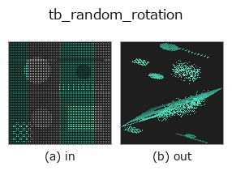

typed op• Datenarten: points → points
• Aufruf: fullseye.apply(img, "tb_random_rotation", a=0.5, b=0.5) (das 2-D-Modell ist ein Bild plus zwei skalare Regler a,b∈[0,1])

*Die Abbildung ist die tatsächliche Ausgabe auf einer synthetischen 128×128-Eingabe. Links Eingabe, rechts Ausgabe. Punktwolken als Draufsicht-Streudiagramm (Helligkeit = z), 1-D-Reihen als Linie, Volumen als Maximum-Projektion entlang z, Videos als mittleres Bild, komplexe Bilder als Betrag; Rückgabewerte, die kein Bild ergeben, werden als Werte gezeigt.*
*Regler a ändert die Ausgabe nicht (gemessen: identisch bei 0,1 / 0,5 / 0,9).*
*Regler b ändert die Ausgabe nicht (gemessen: identisch bei 0,1 / 0,5 / 0,9).*
Stufen (die vorangehenden Ops → dieser Op, von links nach rechts):
▸ tb_random_rotation: Stufen (Doku-Website)
Auf anderen Bildern (synthetische Szene / Foto / Münzen. Obere Reihe: Eingaben, untere Reihe: deren Ausgaben. Regler auf Standard):
▸ tb_random_rotation: andere Eingaben (Doku-Website)
Wendet eine zufällige Rotation an und gibt (rotated, R) zurück (Nachbildung eines Blickwinkelwechsels).
R ist orthonormal mit det=+1 (rotated = points @ R.T = R wirkt von links auf jeden Punkt, die Umkehrung ist rotated @ R). Bei max_angle=None eine gleichverteilte Zufallsrotation nach Shoemake; mit max_angle (Radiant, erwartet [0, π]) wird die Achse gleichverteilt auf der Kugel und der Winkel gleichverteilt in [0, max_angle] gezogen, was den Rotationswinkel begrenzt (arccos((tr R -1)/2) ≤ max_angle ist exakt garantiert).
max_angle < 0 ergibt ValueError, max_angle=0 die Einheitsmatrix. Die Einheit ist Radiant (in Grad übergeben wird es um Größenordnungen zu groß). Die gleichverteilte Rotation mit max_angle=None liefert ganz normal auch große Rotationen bis π; um den Bereich der Blickwinkeländerung einzuschränken, max_angle verwenden. Die Rotation erfolgt um den Ursprung, liegt die Wolke abseits des Ursprungs, bewegt sich auch der Schwerpunkt. Die Konvention von R, rotated = points @ R.T, hat dieselbe Richtung wie dst ≈ src @ R.T + t aus register_fpfh und register_shot, daher lässt sich der Winkelfehler zur Schätzung mit arccos((tr(R_est·Rᵀ)-1)/2) messen. Deterministisch über seed (gleicher seed ergibt dasselbe R). Rückgabe: float64 (N,3) und (3,3).
Die 3d-Op random_rotation, in die 2-D-Evolutionsregistry überbrückt. Die Implementierung ist dieselbe; nur die Aufrufkonvention ist an op(v, a, b) angepasst. Diese Op hat keine Stellgrößen; weder a noch b wird verwendet.
• Katalog der Beispieldaten (Download-URLs / Lizenzen) — 2-D nutzt skimage.data (BSD/Public Domain) plus synthetische Bilder, 3-D nennt Download-URLs echter Datenquellen (Stanford, PDS, …).
• Herkunft und Literatur der Operatoren — die Quellen der Forschung/Verfahren, auf denen diese Operatorfamilie beruht.
Das Programm unten ist nachweislich lauffähig (gleiche Eingabe wie die Abbildung). In der Studio-Hilfe wird dieser Block zu Schaltflächen, die es sofort laden und ausführen.
img_to_points 0.50 0.50 tb_random_rotation 0.50 0.50
▸ Diese Pipeline laden · Laden & ausführen
Die folgenden Beispiele rufen den zugrunde liegenden Ledger-Op random_rotation auf. Dieser Brücken-Op ist dieselbe Implementierung, angepasst an die Konvention fn(v, a, b); das Verhalten gilt unverändert (nur die Aufrufform unterscheidet sich).
• augment_pointcloud — py -3.11 examples_3d/augment_pointcloud.py
• sh_descriptor_retrieval — py -3.11 examples_3d/sh_descriptor_retrieval.py
• shape_retrieval — py -3.11 examples_3d/shape_retrieval.py
points als Eingabe)identity · tb_points_to_voxel · tb_estimate_point_normals · tb_iss_keypoints · tb_project_points · tb_render_point_depth · tb_statistical_outlier_removal · tb_radius_outlier_removal
typed)tb_points_to_voxel · tb_estimate_point_normals · tb_iss_keypoints · tb_project_points · tb_render_point_depth · tb_statistical_outlier_removal · tb_radius_outlier_removal · tb_voxel_grid_downsample
*Provenance: ops.py — 2D Operator-Registry. Diese Notiz wird von tools/opdocs.py md erzeugt (nicht von Hand bearbeiten).*
© 2026 Kazufumi Furuse — Fullseye operator documentation. Licensed under Apache-2.0.